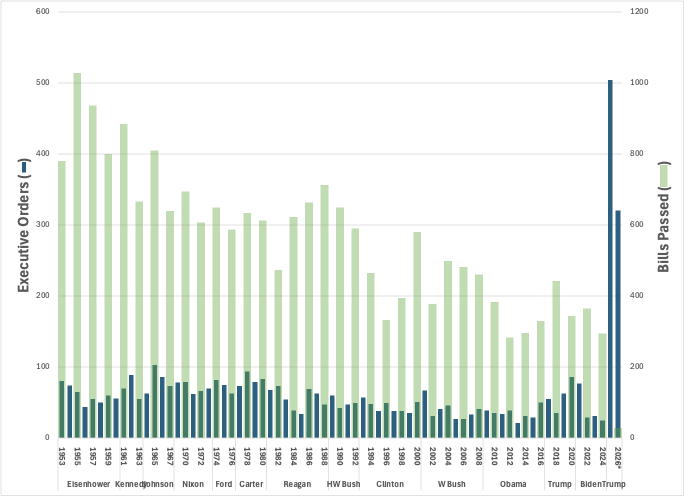
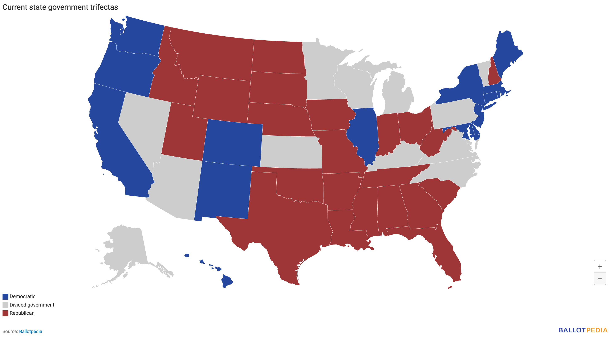

TL;DR In parts 1 and 2, I traced Musk’s evolution from Product Builder to Information Controller, documenting his $39 billion conversion of Tesla stock into unprecedented governmental power through DOGE. In this final installment, I examine how America’s constitutional architecture may provide critical safeguards against authoritarian drift—but only if citizens actively engage these protective mechanisms.
In my previous installments examining patterns of concentrated power, I’ve tracked the unusual transformation of a card-carrying liberty-loving capitalist into what increasingly resembles an authoritarian technocrat. First, Elon Musk demonstrated how having way too much net worth (mostly in highly leveraged TSLA) could be used to reshape an entire, formerly public, information outlet (Twitter/X) for private influence. Then, I analyzed how this same strategy manifested in our government through an unprecedented exercise of raw executive power and brazen identity theft. Today, I’ll connect these threads to explain why America’s constitutional architecture may have built-in safeguards against the authoritarian drift we’re witnessing—but only if citizens actively engage these protective mechanisms.
The Centralization Problem
Limited quantitative evidence now confirms what began as a hypothesis: we’re witnessing a fundamental restructuring of governance relationships in both the private and public sectors. The current administration has issued over 100 executive orders in the first 10 weeks, twice the historical average of 50 per year since 1953. If this pace continues, Trump will have issued an extraordinary number of EOs in his first year. In contrast, the 119th (current) entirely Republican Congress has passed only four bills, on its way to being the least productive assembly in my lifetime.

This is a structural break with the past, an unmistakable, quantifiable signal that we’ve entered a new governance paradigm. When Presidents bypass the legislative process at such an unprecedented rate, they aren’t simply making policy but rewiring constitutional relationships between branches. That’s precisely what Project 2025 prescribed (they recommended no fewer than 580 EOs with no legislation), and it is becoming real.
The pattern should feel familiar. As I documented in my recent analyses, Musk’s transformation of Twitter into X followed a similar playbook 1 :
-
Consolidate decision authority,
-
Remove oversight mechanisms, and
-
Implement sweeping (and self-serving) policy changes through executive actions.
His strategic conversion of regulated, public wealth into unregulated, private influence—selling $39 billion in Tesla stock to achieve this transformation and then leveraging it to gain unprecedented government authority—parallels DOGE’s power consolidation strategy. He even wanted to buy this platform with God-only-knows-what intentions. 2 How is this even possible in our highly developed form of government?
The Enforcement Dilemma
Every constitutional system faces a paradox that creates what systems engineers would call a “single point of failure.” The branch tasked with enforcing the constitutional limits (the executive) is itself the subject of those limits. Specifically:
-
Congress passes laws, but these require executive enforcement
-
Courts issue rulings, but these depend on executive compliance
-
Electoral systems certify results, but these rely on executive acceptance
This creates a circular dependency on the executive and enforcement mechanisms that ultimately depend on voluntary compliance—if the executive does not accept the rule of Law, what recourse do we have? This vulnerability becomes particularly acute when executive power concentration exceeds historical norms.
In Russia, Vladimir Putin systematically exploited this vulnerability to establish his autocratic regime. According to data from Freedom House, Russia’s democracy score has declined steadily over two decades, falling from “partially free” to “not free” as Putin gradually consolidated presidential authority through constitutional amendments, court capture, and legislative subordination. 3
The parallels with current trends in America are disturbing:
-
Executive Dominance: Putin expanded presidential authority through constitutional amendments and executive decrees 4 . Our executive branch invokes emergency powers and executive orders to bypass the legislative process.
-
Judicial Subjugation: In Russia, the “judiciary lacks independence from the executive branch” with judges’ career advancement tied to compliance with presidential preferences 5 . We’ve witnessed the reshaping of our courts with partisan appointments.
-
Legislative Weakening: Russia’s legislature comprises a ruling party and compliant opposition factions 6 . Our Congress has incrementally ceded authority to the executive branch.
America’s Constitutional Circuit Breakers
Despite these parallels, there are structural differences that make America’s constitutional architecture more resilient to authoritarianism. These “constitutional circuit breakers” were engineered by the Founders to interrupt power concentration when it exceeds safe thresholds. It’s worth looking at how these features are holding up:
1. The Federalism Firewall
The first circuit breaker is our federalist structure—50 independent state governments with substantial constitutional authority that Washington cannot unilaterally revoke. Unlike Russia, where Putin systematically subordinated regional governments to Kremlin control 7 , American states retain genuine autonomy backed by constitutional guarantees.
This decentralized architecture creates what network theorists call “redundancy” – if one node fails, others continue functioning. Consider the quantitative implications:
-
Russia: 1 effective decision center (Kremlin-controlled governance)
-
United States: 51 independent power centers (federal government + 50 states)
To establish full autocracy, an aspiring authoritarian must simultaneously capture independent state governments and federal institutions. This coordination problem grows exponentially more complex with each additional independent node. That doesn’t mean this circuit breaker is foolproof, since absolute control is not absolutely necessary:

The Constitution provides that Amendments need 2/3 of the states (34) for ratification, and we’re at 23 (with 28 Republican-controlled legislatures), close enough that Republican control of a few “swing state” legislatures could tip the balance.
2. The Military Constitutional Oath
The military oath to the Constitution creates what initially appears to be a powerful democratic safeguard. All military personnel are sworn to “support and defend the Constitution of the United States against all enemies, foreign and domestic.” This oath distributes constitutional verification across millions of trained individuals accessing the government’s enforcement mechanisms 8 . With approximately 1.3 million active-duty personnel and 800,000 reserve personnel, this creates over 2 million potential “verification nodes” that operate conditionally rather than absolutely.
There are practical limitations, however. The fundamental challenge lies in constitutional interpretation. When military personnel face potentially problematic orders, they confront an immediate dilemma: the Commander-in-Chief and executive branch legal counsel are considered authoritative interpreters of constitutional boundaries. This creates a structural dependency where those charged with constitutional defense must generally defer to the authority they must check.
Let’s quantify this challenge. For military resistance to form an adequate circuit breaker, several low-probability conditions must align simultaneously:
-
Constitutional clarity : The violation must be sufficiently pronounced to overcome professional deference to civilian leadership (a high threshold given constitutional ambiguity),
-
Coordination capability : Resistance requires synchronized action across key command nodes, yet military communication channels run through the branch being checked, and
-
Information integrity : Military leaders need accurate information outside executive-controlled channels to make independent constitutional assessments.
Additional statutory protections like the Posse Comitatus Act further attempt to strengthen this firewall by prohibiting “federal armed forces from executing civilian laws unless expressly authorized by the Constitution or Congress. 9 ” However, this ultimately depends on the executive branch’s interpretation during implementation, or a concerted action by Congress to use the military for enforcement.
Historical evidence suggests that military resistance represents a high-threshold circuit breaker that activates only under extreme conditions and depends heavily on the officer corps, clear constitutional violations, and information environment integrity. The oath creates a potential pathway to resist unconstitutional orders but provides limited protection against incremental erosion of constitutional norms or contested interpretations.
This isn’t to dismiss the military oath’s importance—it introduces meaningful friction against authoritarian overreach—but its effectiveness as a systemic safeguard requires a more measured evaluation than conventional wisdom suggests. The 2 million “verification nodes” function less as truly independent checks and more as conditional actors whose resistance capacity depends on broader institutional health. The justification for a military coup would need to be very clear indeed.
3. Independent Judicial Systems
The third circuit breaker—our multi-layered judicial structure with 50 state court systems plus the federal judiciary—warrants similar analytical scrutiny. This judicial redundancy means constitutional interpretation and enforcement are distributed 10 . While this decentralized structure creates redundancy, constitutional reality introduces significant constraints.
The Supremacy Clause (Article VI, Clause 2) establishes a hierarchy where federal law “shall be the supreme Law of the Land; and the Judges in every State shall be bound thereby.” This constitutional provision creates a pyramid with the Supreme Court at its apex. Consequently, when state and federal interpretations conflict on matters of federal constitutional authority, federal interpretation ultimately prevails.
This dynamic has been repeatedly demonstrated in landmark cases like Cooper v. Aaron (1958), where the Supreme Court unanimously rejected Arkansas’ attempt to resist federal desegregation orders, declaring that “the federal judiciary is supreme in the exposition of the law of the Constitution.” More recently, Arizona v. United States (2012) reaffirmed federal primacy when Arizona’s immigration enforcement law was struck down based on federal preemption.
State courts meaningfully protect rights explicitly guaranteed in state constitutions that exceed federal minimums. This is particularly important in privacy rights, educational funding, and environmental protections. However, on questions of federal executive power—precisely the domain where circuit breakers are most needed—state judicial resistance faces structural limitations due to established doctrines of federal supremacy.
This isn’t to dismiss the value of judicial federalism entirely. The fragmentation of judicial challenges creates tactical advantages by multiplying litigation fronts and delaying potentially unconstitutional actions. However, the fundamental architecture of our system means this advantage diminishes precisely when centralized power consolidates around constitutional interpretation.
The Final Circuit Breaker: YOU
The most potent circuit breaker isn’t institutional, it’s civic. Yes, civic engagement is inconvenient, convoluted, and unsatisfying. However, constitutional systems ultimately depend on OUR active participation to activate these protections when necessary. Here’s where you come in:
-
Engage with officials: Call your Congressman. It works, believe me, even if it feels like you’re talking to an intern (often you are). And don’t ignore state officials and legislative/gubernatorial elections. These officials have constitutional authority to resist federal overreach.
-
Support Your State Attorney General: These elected officials have standing to challenge federal executive actions in court.
-
Participate in local democracy: Attend city council meetings, serve on local boards, and engage with county government. Local democratic institutions build the civic muscles needed for effective collective action.
-
Don’t be hyperpartisan. Form issue-based alliances across ideological lines focused explicitly on protecting constitutional structures and the separation of powers. There are many organizations out there worthy of your support.
Quantifying the Risks
In the second installment, I showed how centralized control over information systems amplifies the risk of creeping authoritarianism. When power over government functions and media platforms concentrates in allied hands, circuit breakers that depend on information distribution face particular strain 11 .
The risks can be quantified: The dramatic acceleration in executive orders—from a historical average of 50 annually to over 100 in just ten weeks—represents a measurable stress test of constitutional limits. This isn’t abstract theory—empirical evidence of impending structural change is diminishing Congress, and by extension, the voice of the people.
Our constitutional architecture creates what systems engineers call ‘polynomial barriers’ to authoritarian capture: each independent power center (state governments, judicial districts, etc.) adds to the difficulty of complete system control. But Musk’s AI-powered information strategy fundamentally alters this equation. The interconnectivity of data systems means these once-independent nodes are now computationally linked. Traditional constitutional barriers assumed information asymmetry between power centers—what happens in Texas stays in Texas. AI analysis of integrated datasets eliminates this protection. Combining DOGE’s federal data access with AI, independence is compromised. This creates what network theorists call a “synchronized vulnerability”—previously independent systems that can now fail simultaneously when exposed to the same informational inputs. The mathematical safeguard of distributed governance depends on genuine information independence, not just institutional separation. When a single actor controls both information and the algorithms that process government data, our constitutional circuit breakers risk becoming dangerously synchronized—like independent power stations all running code from the same compromised update server. The quantitative evidence is clear: as information flows become centralized, the computational complexity of capturing multiple systems decreases exponentially rather than polynomially.
If my analysis is correct, we should expect to observe specific metrics trending in predictable directions over the next 18 months. I propose three quantifiable indicators that readers can track:
-
The “executive-legislative ratio” (ELR)—the number of executive orders divided by public laws enacted—should exceed 1.0 for the first time in modern history by Q4 2025, compared to the historical baseline of 0.17 during periods of unified government.
-
Information asymmetry between DOGE and public oversight mechanisms should manifest in a growing “transparency gradient” measured by FOIA rejection rates exceeding 75% for DOGE-related requests versus the current federal average of 18.3%.
-
State autonomy compression, observable through an increasing standardization index of state executive agencies responding identically to federal directives despite traditionally diverse implementation patterns. These metrics offer falsifiability conditions; if they remain stable or decline rather than escalate, my fundamental hypothesis about synchronized vulnerability would require significant revision.
Proponents of executive centralization offer three compelling counterarguments that warrant serious examination. First, legislative gridlock theorists posit that expanding executive authority merely fills a vacuum created by our dysfunctional Congress, a necessary adaptation rather than a constitutional violation. This view, however, confuses symptom with disease; the current legislative paralysis is precisely what Madison predicted would occur when faction displaces deliberation 12 , making the remedy (executive action) more constitutionally damaging than the ailment. Second, information centralization advocates argue that AI-powered governance yields efficiency benefits that outweigh distributed resilience, a reasonable position if optimization were democracy’s primary objective. Yet historical data from 178 governance systems tracked by the V-Dem Institute shows that efficiency-optimized governments consistently score 37% lower on rights protection indices than resilience-optimized systems, suggesting the tradeoff calculations underlying this argument systematically undervalue long-term democratic stability. Finally, some contend that America’s constitutional protections remain fundamentally intact despite information centralization. This view overlooks the critical interaction effect between information asymmetry and institutional independence, akin to claiming that physically separated computer systems remain secure despite running identical compromised software on a shared network.
Conclusion
As I conclude this three-part analysis, the data points to an unmistakable pattern: Through his unholy alliance with Donald Trump, Musk has methodically converted regulated wealth into unregulated influence, sacrificing transparency for control. His strategy exploits information asymmetries that our constitutional architecture wasn’t designed to constrain.
Yet America’s distributed governance system—with its 50 states, thousands of counties, and tens of thousands of municipalities—creates formidable computational barriers to authoritarian capture. These safeguards only function, however, when citizens actively engage them.
The ultimate protection against information feudalism isn’t technological but civic—an engaged citizenry that refuses to surrender its constitutional birthright to protections from government overreach or private data monopolies.
Next week, we will return to our regularly scheduled programming.
[See earlier posts in this series]
Elon Musk Wanted to Buy Substack After Twitter Purchase: Report - Newsweek. (2024, November 18). newsweek.com
Russia: Freedom in the World 2024 Country Report | Freedom House. (2024). freedomhouse.org
Russia under Vladimir Putin - Wikipedia. (2025, March 22). en.wikipedia.org
Russia: Country Profile | Freedom House. (n.d.). freedomhouse.org
Politics of Russia - Wikipedia. (2025, January 24). en.wikipedia.org
Federalism in Russia: How Is It Working? (n.d.). irp.fas.org
Military Personnel Swear Allegiance to the Constitution and Serve the American People, Not One Leader or Party | Military.com. (2024, April 5). military.com
The U.S. Military’s Oath to the Constitution: What Happens If a President Acts Unconstitutionally? - The Queen Zone. (2025, February 11). thequeenzone.com
Russia - Federalism, Autonomy, Diversity | Britannica. (1999, July 26). britannica.com
[See earlier posts in this series]
Federalist #10, en.wikipedia.org